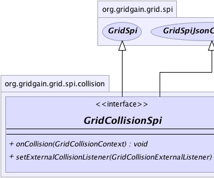
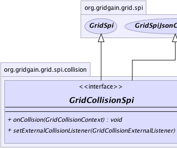

|  |  |
|
GridGain™ 3.6.0c
Community Edition |
|||||||||
| PREV CLASS NEXT CLASS | FRAMES NO FRAMES | |||||||||
| SUMMARY: NESTED | FIELD | CONSTR | METHOD | DETAIL: FIELD | CONSTR | METHOD | |||||||||
public interface GridCollisionSpi
Collision SPI allows to regulate how grid jobs get executed when they arrive on a destination node for execution. Its functionality is similar to tasks management via customizable GCD (Great Central Dispatch) on Mac OSX as it allows developer to provide custom job dispatching on a single node. In general a grid node will have multiple jobs arriving to it for execution and potentially multiple jobs that are already executing or waiting for execution on it. There are multiple possible strategies dealing with this situation, like all jobs can proceed in parallel, or jobs can be serialized i.e., or only one job can execute in any given point of time, or only certain number or types of grid jobs can proceed in parallel, etc...
Collision SPI provides developer with ability to use the custom logic in determining how grid jobs should be executed on a destination grid node. GridGain comes with the following ready implementations for collision resolution that cover most popular strategies:
NOTE: this SPI (i.e. methods in this interface) should never be used directly. SPIs provide internal view on the subsystem and is used internally by GridGain kernal. In rare use cases when access to a specific implementation of this SPI is required - an instance of this SPI can be obtained viaGrid.configuration() method to check its configuration properties or call other non-SPI
methods. Note again that calling methods from this interface on the obtained instance can lead
to undefined behavior and explicitly not supported.
| Wiki | |
| Forum |
|  | |
| Method Summary | |
|---|---|
void |
onCollision(GridCollisionContext ctx)
This is a callback called when either new grid job arrived or executing job finished its execution. |
void |
setExternalCollisionListener(GridCollisionExternalListener lsnr)
Listener to be set for notification of external collision events (e.g. job stealing). |
| Methods inherited from interface org.gridgain.grid.spi.GridSpi |
|---|
getName, getNodeAttributes, onContextDestroyed, onContextInitialized, spiStart, spiStop |
| Methods inherited from interface org.gridgain.grid.spi.GridSpiJsonConfigurable |
|---|
setJson |
| Method Detail |
|---|
void onCollision(GridCollisionContext ctx)
Implementation of this method should act on all lists, each of which contains collision
job contexts that define a set of operations available during collision resolution. Refer
to GridCollisionContext and GridCollisionJobContext documentation for
more information.
ctx - Collision context which contains all collision lists.
void setExternalCollisionListener(@Nullable
GridCollisionExternalListener lsnr)
GridGain uses this listener to enable job stealing from overloaded to underloaded nodes.
However, you can also utilize it, for instance, to provide time based collision
resolution. To achieve this, you most likely would mark some job by setting a certain
attribute in job context (see GridJobContext) for a job that requires
time-based scheduling and set some timer in your SPI implementation that would wake up
after a certain period of time. Once this period is reached, you would notify this
listener that a collision resolution should take place. Then inside of your collision
resolution logic, you would find the marked waiting job and activate it.
Note that most collision SPI's might not have external collisions. In that case, they should simply ignore this method and do nothing when listener is set.
lsnr - Listener for external collision events.
|
GridGain™ 3.6.0c
Community Edition |
|||||||||
| PREV CLASS NEXT CLASS | FRAMES NO FRAMES | |||||||||
| SUMMARY: NESTED | FIELD | CONSTR | METHOD | DETAIL: FIELD | CONSTR | METHOD | |||||||||
|
GridGain - Real Time Big Data
|
|

|
|